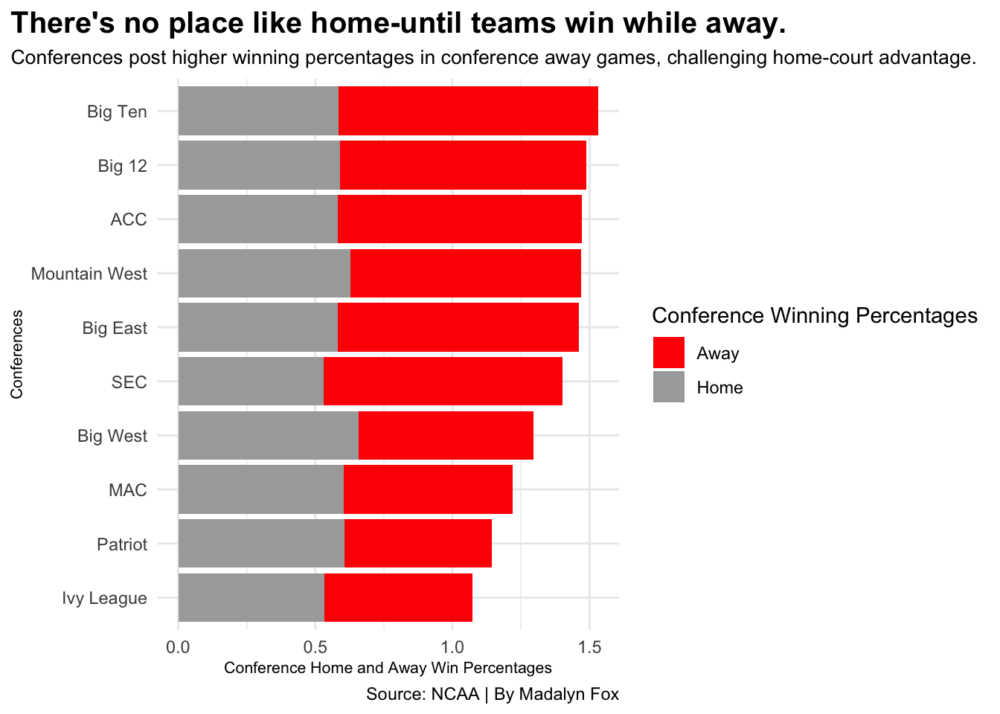

Home-court advantage in college basketball is real, but maybe not as powerful as it once was.Historically, teams will play better on their own court. Since they aren’t dealing with unfamiliar surroundings, unsupportive crowds, and travel fatigue, it is an advantage. But in today’s game, where each player becomes better than the last-the question arises: is home-court advantage still as impactful across conferences as it used to be?
To find out- let’s take a look at conference winning percentages and how they are affected by home and away games.
library(tidyverse)
── Attaching core tidyverse packages ──────────────────────── tidyverse 2.0.0 ──
✔ dplyr 1.1.4 ✔ readr 2.1.5
✔ forcats 1.0.0 ✔ stringr 1.5.1
✔ ggplot2 3.5.1 ✔ tibble 3.2.1
✔ lubridate 1.9.4 ✔ tidyr 1.3.1
✔ purrr 1.0.2
── Conflicts ────────────────────────────────────────── tidyverse_conflicts() ──
✖ dplyr::filter() masks stats::filter()
✖ dplyr::lag() masks stats::lag()
ℹ Use the conflicted package (<http://conflicted.r-lib.org/>) to force all conflicts to become errors
library(dplyr)library(ggalt)
Registered S3 methods overwritten by 'ggalt':
method from
grid.draw.absoluteGrob ggplot2
grobHeight.absoluteGrob ggplot2
grobWidth.absoluteGrob ggplot2
grobX.absoluteGrob ggplot2
grobY.absoluteGrob ggplot2
Warning in split.default(x = seq_len(nrow(x)), f = f, drop = drop, ...): data
length is not a multiple of split variable
Warning in mean.default(X[[i]], ...): argument is not numeric or logical:
returning NA
Warning in mean.default(X[[i]], ...): argument is not numeric or logical:
returning NA
Warning in mean.default(X[[i]], ...): argument is not numeric or logical:
returning NA
Warning in mean.default(X[[i]], ...): argument is not numeric or logical:
returning NA
Warning in mean.default(X[[i]], ...): argument is not numeric or logical:
returning NA
Warning in mean.default(X[[i]], ...): argument is not numeric or logical:
returning NA
Warning in mean.default(X[[i]], ...): argument is not numeric or logical:
returning NA
Warning in mean.default(X[[i]], ...): argument is not numeric or logical:
returning NA
Warning in mean.default(X[[i]], ...): argument is not numeric or logical:
returning NA
Warning in mean.default(X[[i]], ...): argument is not numeric or logical:
returning NA

Some conferences, and teams, consistently have a higher away winning percentages when playing teams in their own conference.
What do the numbers look like?
ggplot() +geom_point(data=percentage,aes(x=total_conf_away_wins, y=total_conf_home_wins, size=total_wins), color ="darkgrey",alpha = .3) +scale_size(range =c(1,10), name="Total Wins") +geom_text_repel(data=percentage,aes(x=total_conf_away_wins, y=total_conf_home_wins, label=Conference) ) +geom_point(data=big10,aes(x=total_conf_away_wins, y=total_conf_home_wins, size=total_wins), color ="red",alpha = .3) +labs(x="Total Conference Home Wins",y="Total Conference Away Wins",title ="Big Ten has more wins on both courts.",subtitle="The Big Ten Conference, has more away and home wins than other conferences.",caption="Source: Sports Reference | By Madalyn Fox" ) +theme_minimal() +theme(plot.title =element_text(size =20, face ="bold"),axis.title =element_text(size =8),plot.subtitle =element_text(size=10),plot.title.position ="plot" )
The Big Ten is more than 5% higher than the ACC when playing on the road, which is a notable margin. Yet, the Big Ten ranks more towards the middle when it comes to home winning percentages. This could suggest that Big Ten teams are still solid at home, but the That’s a noticeable margin. Yet, the Big Ten ranks more toward the middle of the rankings when it comes to home winning percentages, suggesting that while their teams are solid at home, their road strength is what really sets them apart.
How does the Big Ten rank overall?
ggplot() +geom_point(data=percentage,aes(x=total_conf_away_wins, y=total_conf_home_wins, size=total_wins), color ="darkgrey",alpha = .3) +scale_size(range =c(1,10), name="Total Wins") +geom_text_repel(data=percentage,aes(x=total_conf_away_wins, y=total_conf_home_wins, label=Conference) ) +geom_point(data=big10,aes(x=total_conf_away_wins, y=total_conf_home_wins, size=total_wins), color ="red",alpha = .3) +labs(x="Total Conference Home Wins",y="Total Conference Away Wins",title ="The Big Ten has more wins on both courts.",subtitle="The Big Ten Conference, has more away and home wins than other conferences.",caption="Source: Sports Reference | By Madalyn Fox" ) +theme_minimal() +theme(plot.title =element_text(size =20, face ="bold"),axis.title =element_text(size =8),plot.subtitle =element_text(size=10),plot.title.position ="plot" )
As one of the largest conferences in the country, the Big Ten unsurprisingly ranks toward the top in total wins, both at home and on the road. The ACC, which has the same number of teams, isn’t far behind in overall success but struggles more on the road. Looking closer, how do individual Big Ten teams perform, especially when they leave their home courts?
chart4 <- percentage |>select(Conference, conference_winning_pct, conference_away_winning_pct, conference_home_winning_pct)chart4 |>gt() |>cols_label(conference_winning_pct ="Conference Winning Percentage",conference_home_winning_pct ="Home Winning Percentage",conference_away_winning_pct ="Away Winning Percentage" ) |>tab_header(title ="The Big Ten Dominates the Road",subtitle ="The Big Ten is among the best of the conferences when playing away games" ) |>tab_style(style =cell_text(color ="black", weight ="bold", align ="left"),locations =cells_title("title") ) |>tab_style(style =cell_text(color ="black", align ="left"),locations =cells_title("subtitle") ) |>tab_source_note(source_note =md("**By:** Madalyn Fox | **Source:** Sports Reference") ) |>tab_style(locations =cells_column_labels(columns =everything()),style =list(cell_borders(sides ="bottom", weight =px(3)),cell_text(weight ="bold", size=12) ) ) |>opt_row_striping() |>opt_table_lines("none") |>fmt_percent(columns =c(conference_winning_pct, conference_away_winning_pct, conference_home_winning_pct),decimals =1 ) |>tab_style(style =list(cell_fill(color ="red"),cell_text(color ="white") ),locations =cells_body(rows = Conference =="Big Ten") )
The Big Ten Dominates the Road
The Big Ten is among the best of the conferences when playing away games
Conference
Conference Winning Percentage
Away Winning Percentage
Home Winning Percentage
ACC
55.2%
89.1%
58.1%
Big 12
59.0%
89.9%
59.0%
Big East
56.1%
88.0%
58.2%
Big Ten
60.7%
94.7%
58.4%
Big West
53.9%
63.6%
65.9%
Ivy League
52.9%
53.8%
53.3%
MAC
50.3%
61.7%
60.3%
Mountain West
53.7%
84.0%
62.9%
Patriot
45.7%
53.7%
60.6%
SEC
65.3%
87.3%
52.9%
By: Madalyn Fox | Source: Sports Reference
Every team has better point margins while playing at home, but the extent of the home-court advantage can vary. Some teams maintain competitive point margins away from home, while other teams just struggle significantly when playing on the road.
In the end, home-court advantage may still matter, but it’s clear that in today’s college basketball landscape, the best teams will find ways to win—regardless of the court they’re playing on.